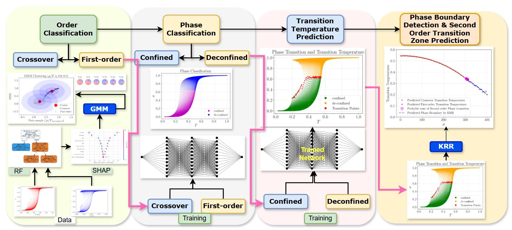
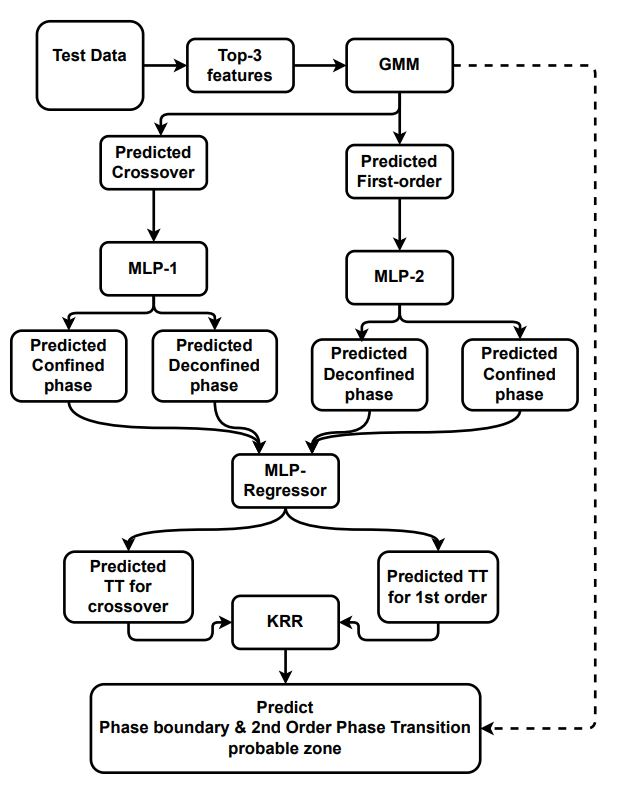

Bock Diagram of Proposed Methodology
Training Phase
Due to data scarcity in QCD studies, we adopt a handcrafted feature extraction strategy, incorporating statistical descriptors like kurtosis and skewness, along with a novel feature, the Maximum Separation Measure (MSM).
Given a signal vector \( \mathbf{x} = [x_1, x_2, \ldots, x_n] \), where each \( x_i \in \mathbb{R} \) represents sequential measurements, the MSM is mathematically defined as:
\[ \text{MSM}(\mathbf{x}) = \max_{i \in \{1, \ldots, n-1\}} \|x_{i+1} - x_i\|^2 \]
This measure effectively quantifies the largest squared distance between consecutive data points, making it highly sensitive to sudden changes indicative of phase boundaries.
These features are analyzed using SHapley Additive exPlanations (SHAP), enabling model-agnostic interpretability. The top features, including MSM, kurtosis, and skewness, are selected for unsupervised clustering to distinguish between crossover and first-order transitions, facilitating accurate phase transition identification.
Figure~1 illustrates the global importance of these top three features across all samples in the binary classification task, confirming their significant contribution toward distinguishing between crossover and first-order phase transitions. These analyses facilitated the selection of the top three features, namely Kurtosis, Skewness, and MSM, for subsequent unsupervised clustering analyses aimed at categorizing the phase transitions.
We employ a Gaussian Mixture Model (GMM) for clustering crossover and first-order phase transitions, leveraging its ability to handle small datasets and unlabeled data. The GMM models the probability distribution as \( p(\mathbf{x}) = \sum_{k=1}^{K} \pi_k \mathcal{N}(\mathbf{x} | \mu_k, \Sigma_k) \), where \( \pi_k \), \( \mu_k \), and \( \Sigma_k \) represent the mixture weights, mean, and covariance of each component.
Using the Expectation-Maximization (EM) algorithm, we iteratively optimize these parameters, enabling effective soft clustering and probabilistic classification. The GMM is trained with empirically optimized hyperparameters, ensuring stable and reproducible clustering results across the dataset.
To delineate the phase boundary, this study employs a hybrid regression approach combining parametric and semi-parametric techniques. The Multi-Task Learning (MTL) model uses a Multi-Layer Perceptron (MLP) to classify phases and predict transition temperatures for each coupling constant.
After classification, a parametric regression is performed using an MLP regressor to predict the transition temperatures from \(\sigma\)-\(T\) data. Subsequently, Kernel Ridge Regression (KRR)[1] is applied to accurately establish the phase boundary, where the prediction is given by the following equation:
\( f(\mathbf{x}) = \sum_{i=1}^{n} \alpha_i k(\mathbf{x}, \mathbf{x}_i) \)
where \(\alpha\) denotes the regression coefficients and \(k(\mathbf{x}, \mathbf{x}_i)\) is the kernel function. This approach enhances the precision and robustness of the phase boundary predictions.
Step 1: Feature Extraction
The process begins with a labeled dataset containing two types of phase transition data: crossover and first order. From this data, various statistical features are extracted, including:
The extracted statistical features include msm, a newly proposed feature introduced in the study; median, representing the central value of the dataset; range, the difference between the maximum and minimum values; IQR (Interquartile Range), which is the difference between the 75th and 25th percentiles; skewness, measuring the asymmetry in the data distribution; kurtosis, indicating the “tailedness” of the distribution; entropy, a quantifier of disorder or uncertainty; first_deriv_mean, the average value of the first derivative of the key signal; first_deriv_std, the standard deviation of the first derivative; first_deriv_max, the maximum observed value of the first derivative; and first_deriv_min, the minimum observed value of the first derivative.
These features help in characterizing the system's behavior near the phase transition.
Step 2: Feature Importance using Random Forest and SHAP
In this step, a Random Forest classifier is used to rank the importance of the extracted features by differentiating between crossover and first order transitions. To provide interpretability:
- SHAP (SHapley Additive exPlanations) computes contribution scores, offering both local and global insights into which features are influential in making predictions.
- Figures (1) and (2) in the study illustrate the score distribution of the important features as obtained by the explainable AI approach.
After assessing feature importance via Random Forest and SHAP, the top-3 most important features are selected for further analyses. This Reduces the dimensionality of the problem.
Step 3: Unsupervised Classification with GMM
With the selected features, a Gaussian Mixture Model (GMM) is trained using the labeled data. The methodology here involves:
- Empirically setting the hyperparameters (such as
The hyperparameters are set as: \(\text{covariance\_type} = \text{'diag'}\), \(\text{tol} = 10^{-3}\), \(\text{reg\_covar} = 0.04\), \(\text{max\_iter} = 500\), \(\text{n\_init} = 1\), and \(\text{random\_state} = 45\).
) based on the training data. - Keeping the GMM parameters fixed during the testing phase, allowing for unsupervised classification by computing the probability of new data belonging to either the crossover or first order group.
Step 4: Dual MLP for Confined vs. Deconfined Classification
After classifying the data into crossover and first order types using the GMM, the methodology further distinguishes between the confined and deconfined phases:
- Two separate Multi-Layer Perceptrons (MLP) are trained:
- One MLP for classifying confined versus deconfined phase in the crossover data.
- Another MLP for the same classification in the first-order data.
- This dual approach ensures each MLP is tailored to the unique characteristics of its corresponding dataset.
Step 5: MTL for Transition Temperature Regression
- An additional MLP regressor is trained to predict the transition temperatures for both crossover and first-order data.
- This parametric regression model learns from all confined and deconfined data across both data.
Step 6: Non-Parametric Regression for Phase Boundary Prediction
Finally, with the transition temperatures predicted, the phase boundary is determined using various non-parametric regression techniques:
- Gaussian Process Regression
- Polynomial Regression
- Kernel Regression
- k-Nearest Neighbors (kNN) Regression
- Kernel Ridge Regression (KRR)
- A hybrid regression model combining KRR and kNN.
Among these techniques, KRR is found to be most effective on the validation dataset. The soft probability assignments from the GMM further help in defining a probable zone of phase transition over the predicted boundary.
In brief
The proposed methodology integrates statistical feature extraction, supervised feature ranking with explainable AI (SHAP), unsupervised classification via GMM, and both parametric and non-parametric regression techniques. The approach ensures classification of phase transitions in two-flavour quark matter, providing prediction of the phase boundary and probable second order transition zone.
Testing Phase
In the testing phase, a new unlabelled dataset is introduced for inference. The first step involves extracting the top three features from the raw test data using the same feature selection logic employed during the training phase. These features are then passed through the pretrained (with hyperparameters) Gaussian Mixture Model (GMM), where the model—configured with fixed hyperparameters—classifies each input sample into one of two categories: crossover or first-order phase transition.
The samples predicted as crossover are then fed into already trained MLP-1 model, while the first-order samples are fed to another trained MLP-2 model. Each of these multi-layer perceptrons has been trained to detect whether the input data corresponds to a confined or deconfined phase and hence predict in the testing phase.
Once classification into confined and deconfined states is complete for both crossover and first-order samples, these predicted phases are aggregated and passed into a shared MLP-Regressor. This regressor, trained using a parametric regression strategy during the training phase, is responsible for estimating the transition temperatures (TT). The regression model outputs two transition temperatures: one for crossover and another for first-order transitions.
These predicted transition temperatures serve as input to a non-parametric model, specifically the Kernel Ridge Regression (KRR) framework. The KRR model maps the transition temperature data to a continuous surface, allowing it to predict the phase boundary across varying thermodynamic parameters. Furthermore, by leveraging the soft probability assignments from the GMM classifier, the method identifies and highlights regions on this boundary that are likely to correspond to second-order phase transitions.